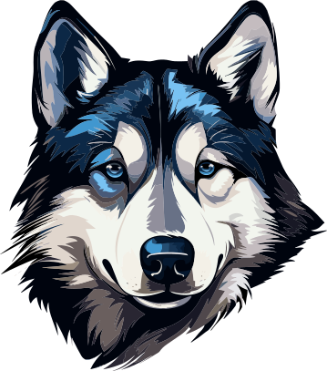
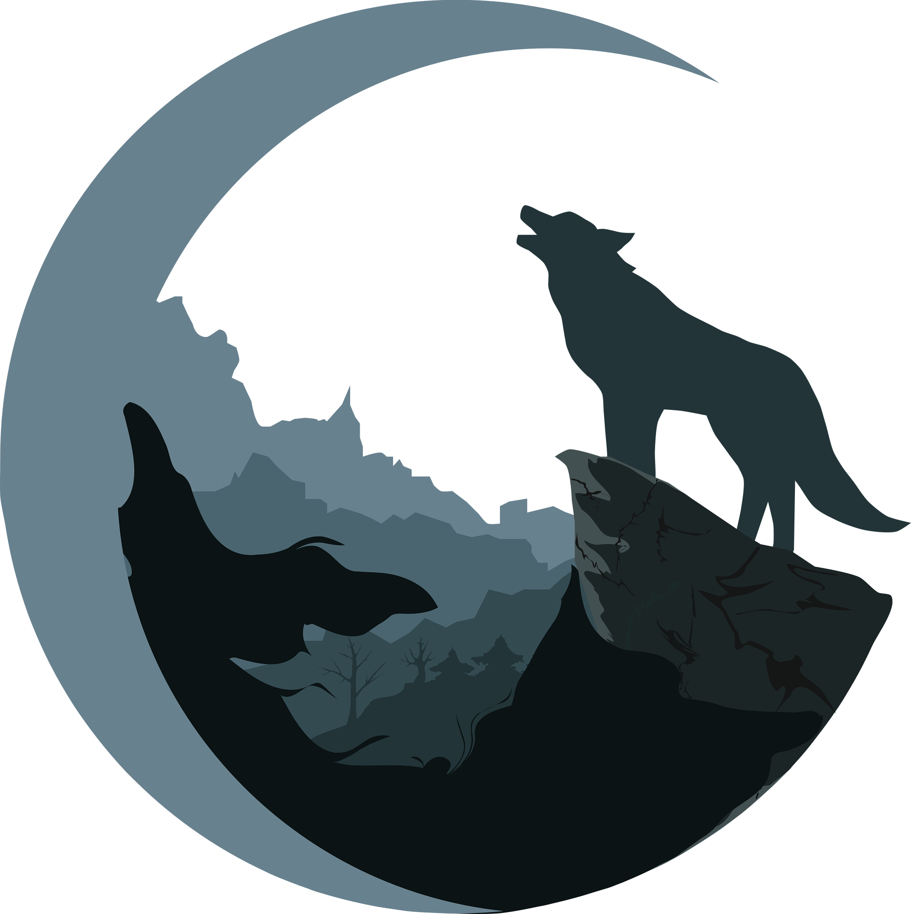
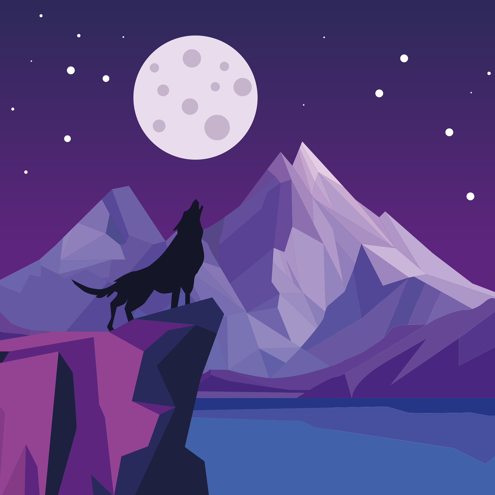
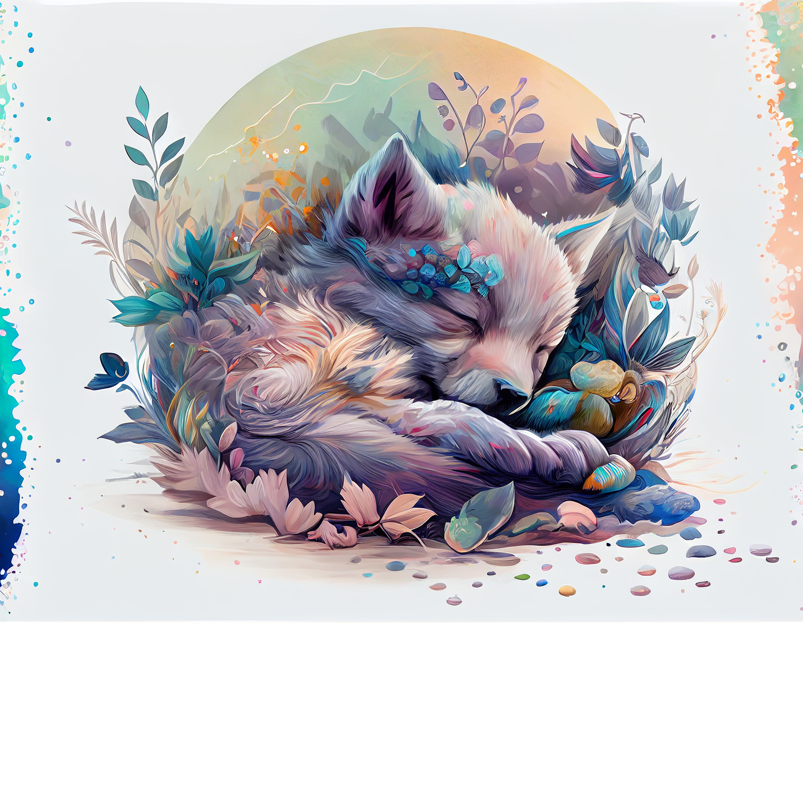
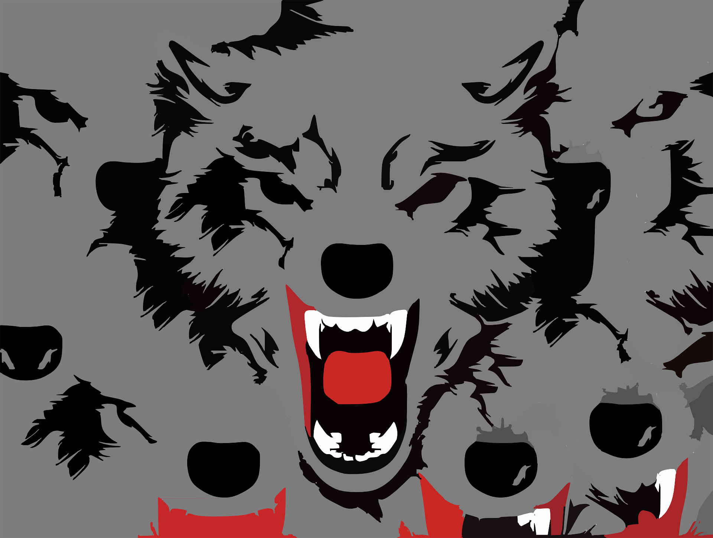
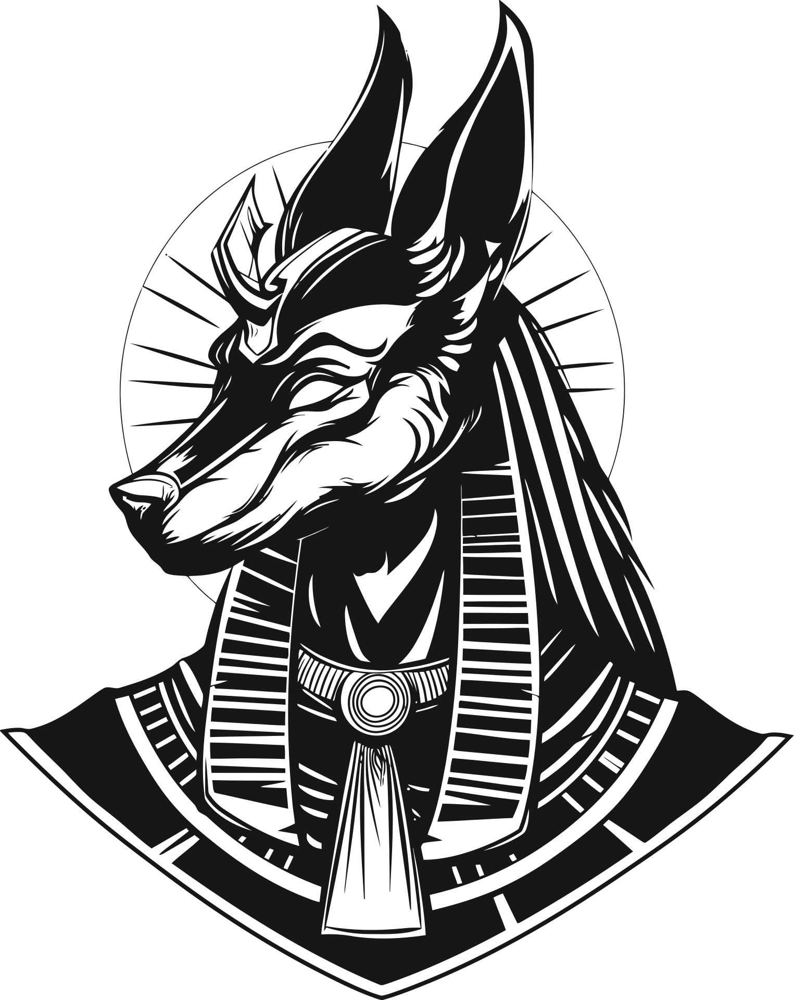

Wolf pack
header link one
header link two
header link three

Try resizing this page!
See how effortlessly the layout adjusts? Whether you're on a desktop, tablet, or smartphone, the content remains beautifully organized.
Press the button below to learn how to achieve the same responsive design on your own website.
I want to learn more!
Did you know that?

Pack Animals
Wolves live and hunt in packs, which are typically family groups consisting of a breeding pair (the alpha male and female) and their offspring.

Communication
Wolves communicate using a range of vocalizations including howls, barks, growls, and whines, as well as through body language and scent marking.

Territory
Wolves are highly territorial and will defend their range, which can cover hundreds of square miles, from other packs.

Mythology
In ancient Egyptian mythology, Anubis is a deity associated with wolves and jackals. Anubis, depicted as a man with the head of a jackal or a full jackal, is the god of mummification and the afterlife.